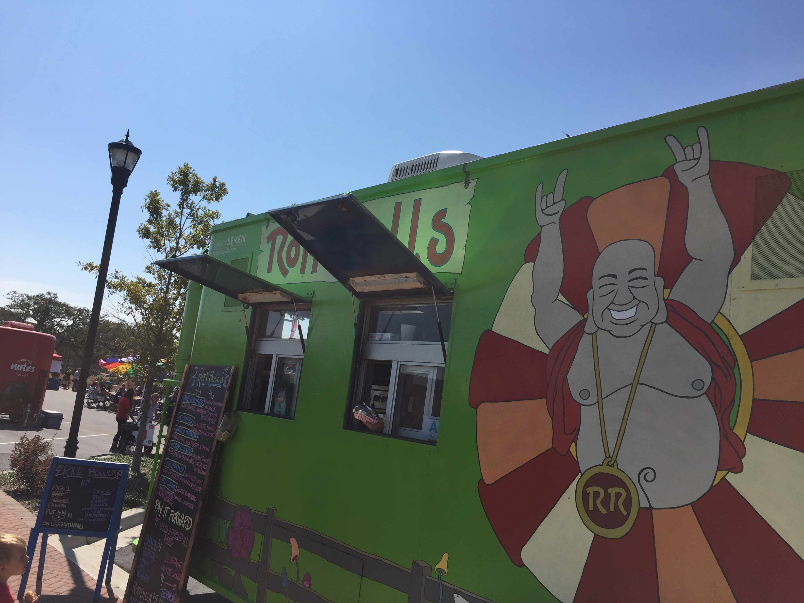
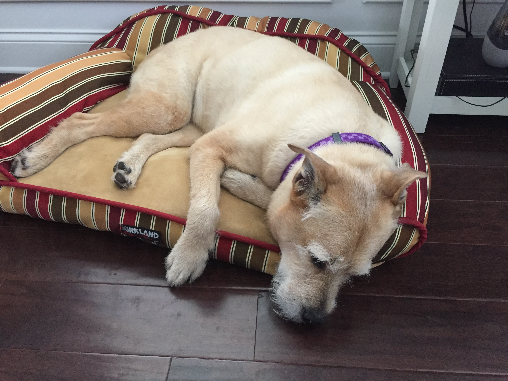
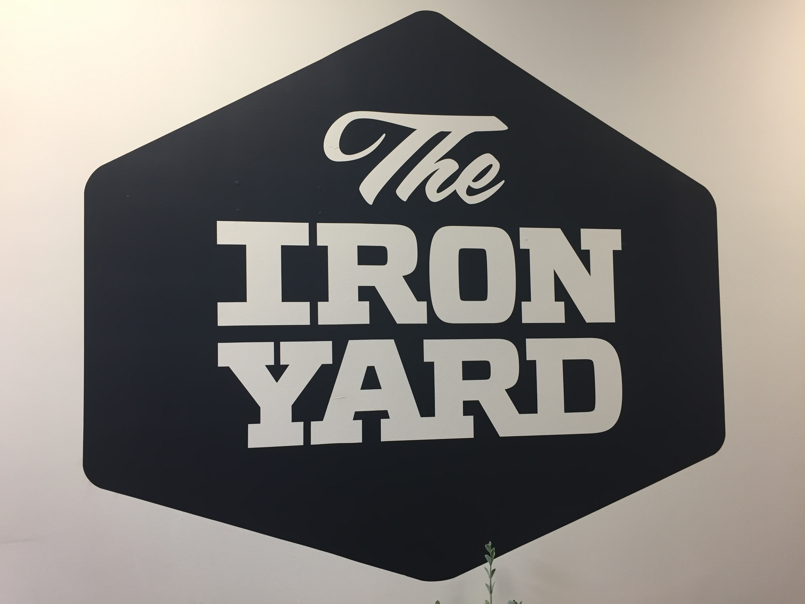

I have a varied work history, abundant soft skills and excellent communication skills. I work well with others and consider myself to be a servant leader. The ideal working environment will have high expectations that are tempered with patience and understanding. I am not afraid to ask for help when I am stuck. I am going to exhaust my on-line resources (usually stackoverflow) before asking another tech to divert her/his attention from what they are doing to lead me out of the weeds. If that sounds like the kind of applicant you are looking for then I would like to add that I show up early, stay late, work weekends and I lend a hand when my services are required whether the task is in my job description or not. I am a live and let live kind of human. The Agile workplace is the place for me!
I am an old dog learning new tricks. Husband and a father. I enjoy the outdoors....cycling, kayaking, crabbing, and the beach. I love golf and would really love to shoot more rounds in the 80's. I am active in a local non-profit and I enjoy my Cowboys. There is a special place in my heart for food trucks and craft beer.
Since graduation I have focused on my on-line learning. I spend my days going through video lessons and learning new technologies. I spend my nights reading. I have recently focused my attention on building a portfolio. When I get anxious or stuck on something I have my walking companion by my side ready to accompany me on a trist around the neighborhood.
Java introduced me to object-oriented programming and that has made all the difference. It has enhanced my understanding of javascript. I look forward to landing a position where I can learn to build efficient, well-documented Java code. A bonus would be a position where I could cultivate my chops as a full-stack developer and work in the cloud.
